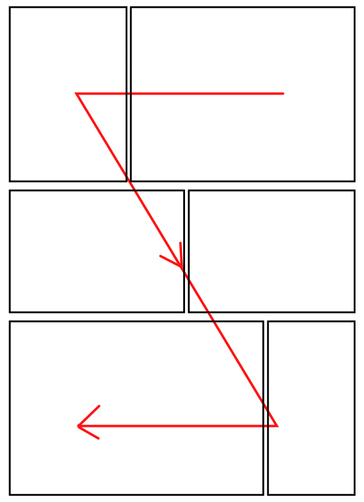
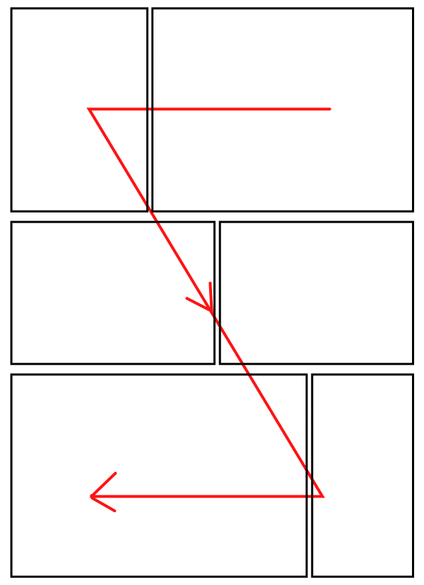

かんたんEPUB作成
漫画や写真集などの画像が主な固定レイアウトのEPUBを簡単に作れるサイト。
ファイルサイズの上限はPCやブラウザーに依存し、２００MBまでは試しています。画像ファイルの数は９９９枚以下、ブラウザーはchromeを推奨しています。対応OSはMac、iPadOSなどのSafariブラウザ。Windows、Androidなどのクロームやedge、firefox。ただし、IE11は対応していません。
使い方
画像形式はJPGとPNGにしていて混在が可能。画像サイズは表紙も含めてすべての画像が同じサイズであることを前提にしています。
スタイルを適用するだけでデザインに適用されます。
- 見開きページは分割する必要がある。
- 見開きページ位置を調整するには白ページなどを適宜入れてほしい。
見開きの確認はEPUBビュワーで確認してほしいが。右綴じの場合に奇数ページが右、偶数ページが左のページになる。
本のとじ方向
本のとじ方向は通常の漫画では右綴じである。
電子書籍端末で右綴じの場合に端末の左端をタップすると次のページをひらく。もしくは左から右にスワイプする。
綴じ方向は見開きにした場合に、右綴じでは、右側から左側にページが並ぶ。
左綴じでは左側から目右側にページが並ぶ。
パネルビュー
Kindle端末で画面をダブルタップした時に画像が拡大される。その拡大された表示の移動方向を指定する。
通常の右綴じ漫画であれば、右上、左上、右下、左下と移動する。
四コマの場合は、右上、右下、左上、左下と移動する。左綴じの場合は左上から移動が始まる。
ファイルサイズの上限はPCやブラウザに依存しています。販売サイトごとにファイルサイズの上限が決まっている。
 

本の情報の入力
- タイトル名
- 著者名１
- 著者名２
著者名は２つ入力できるが著者名２は入力しなくても問題がない。
表紙画像
表紙画像でファイル選択をクリックすると、画像選択するウィンドウがひらく。
ファイル形式はJPGとPNGに制限しています。表紙画像を選択するとその下の、画像の横幅と高さも自動で設定される。
手動でサイズを変更することもできるが、おすすめしません。
本文ファイルの読み込み
本の内容の画像を複数ファイルを一括で読み込む。
HTML5の仕様の問題でファイルの読み込まれる順番がランダムになっている。
画像の整列をクリックしてファイル名順に整列してほしい。
画像ファイルが読み込まれると小さく画像が表示される。その小さい画像をクリックすると拡大して表示ができる。
ファイル名順では自然ソートを利用している。
AndroidやiPadOS端末では、画像ファイルは一括して読み込むことができず、ひとつづつしか追加できない。iOS端末ではファイルの出力ができない。ともにOSの問題であり、パソコンでは動作する。推奨するブラウザはクローム。
目次の編集
EPUBの目次とはタップすることでそのページにジャンプする機能である。利用方法としては表紙、目次ページ、人物紹介、第一話、第二話、奥付などを目次に入れる。
目次の編集画面ではCoverの右側が目次に表示される表紙の名前。表示する名前を変えることができる。
本文の選択となっているところが、本文の画像ファイルを読み込むと画像ファイル名に変わる。画像ファイルを選び、画像につける目次の内容を決める。
追加をクリックすると目次を増やせる。
ファイルの出力
保存をクリックするとEPUBがダウンロードされる。このサイトはサーバー側で処理しているわけではないので、画像ファイルはアップロードされない。ブラウザでファイルを生成しているがファイルの保存機能はブラウザのダウンロードを利用している。
EPUBビュワー
EPUBビュワーとしてBiB/iを設置しているが、EPUB３の固定レイアウトに対応しているビュワーなら問題ない。クロームアプリのReadiumもある。iPadだと、iBooksで開くこともできる。EPUBビュワーで見開きや、目次の表示を確認してほしい。
Kindleで見る場合は、KindlePreviewerにドラッグ・アンド・ドロップしてMOBIファイルに変換してから見ることができます。
利用条件
kobo、ブックウォーカー、Kindle、iBooksなどで個人でのEPUBでの入稿を目的として作りました。個人利用、商用利用のどちらも使用できます。
サイトの維持のために
ほしいものリストやGitHub Sponsorsで寄付を募集しているので儲かったらくれるとありがたい。
麺最事項
当サイトの運営者は当サイトの利用、または作成したファイルにより生じた損害に対する責任を負いません。
JSライブラリ
本来はjavascriptライブラリを作ることを目的として作っていたが、早く作ることを優先した。名前の付け方がjavascriptライブラリっぽい付け方になっているのはそのためだ。javascriptライブラリは特定の機能をひとまとめにしたもの。
今のところサイト専用のライブラリになってしまって汎用性がない。例えば、汎用化するには、タイトル、著者名、目次、画像などをオブジェクト化してライブラリに渡すようにすべきだろうと思う。またテンプレートも外部ファイル化して編集しやすくすべきだろう。そういうことが全くできてない。
そうすればサイトにfixedepub3.jsを読み込めばサイト上からEPUB3を生成できるようになる。